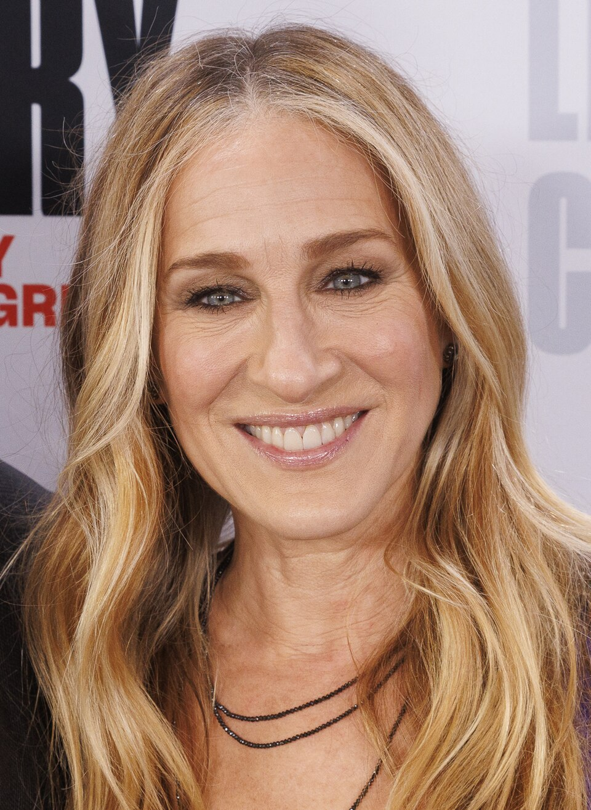

Northwestern Students React to Sarah Jessica Parker as 2026 Commencement Speaker

Northwestern University made waves on campus with the announcement that actress and producer Sarah Jessica Parker will deliver the keynote address at the Class of 2026 commencement ceremony. The actress is best known for her iconic role as Carrie Bradshaw in Sex and the City. As the news spread across campus, there were varied reactions ranging from excitement to skepticism.
Parker joins an esteemed list of Northwestern commencement speakers, including Barack Obama, Stephen Colbert, JB Pritzker, Seth Meyers, and Billie Jean King. While some students believes her name most certainly fits that list, others have raised question about her relevance and alignment with what a commencement speaker is expected to be.
Andre Pang, a senior at the School of Communication, said that he found the announcement as great news. Pang highlight how he had previously attended an event organized byy the School of Communication where Parker was a speaker. He was glad with that experience and happy that she is back at Northwestern again.
Pang described Parker as someone who is "super influential, super funny, and super bright." Click play to hear Pang's initial reaction
When asked about what he hopes Parker speaks about during the commencement, Pang said he hopes she shares her thoughts about the importance of connection and community. Click play to hear Pang's thoughts
However, not everyone on campus shared the same level of enthusiams or excitement as Pang.
Sohan Sahay, a sophomore, expressed how he found the choice an interesting yet not convincing one. Although he acknowledged Parker's success in the entertainment industry and her name recognition, he quiestioned whether her body of work directly spoke to the goals of the marjoirty of Northwestern graduates, as many students are heading into fields like journalism, economics, engineering and politics. Click play to hear Sohan's thoughts
Daniel Kobrinsky, a senior at the School of Communication, also expressed his skepticism, albeit in a different manner. His worries were less about Parker's body of work and more about her unfamiliarity to the younger audience on campus.
Kobrinsky emphasized that many of his friends had little to no familiarity with Parker's work, which could lead to a disconnect between the speaker and the audience. He also questioned whether what Parker would have to say would resonate with Northwestern graduates, considering she did not attend the university.
Kobrinsky said he was hoping for a comedian like Stephen Colbert, who was the commencement speaker in 2018, to be invited again. He argued that a comedian could hold an audience's attention through a long ceremony while still delivering a meaningful message. Click play to listen to Kobrinsky's thoughts
Whatever side of the debate you fall on, it is evident that Sarah Jessica Parker's arrival at Northwestern has sparked conversations about the evolving nature of commencement ceremonies.
The Class of 2026 will find out whether Parker delivers when she takes center stage as the keynote speakeron June 14th, 2026, at the United Center for Northwestern University's 168th annual commencement..
If you're interested in sharing your reactions, drop me a line: antonyvincent2026@u.northwestern.edu.